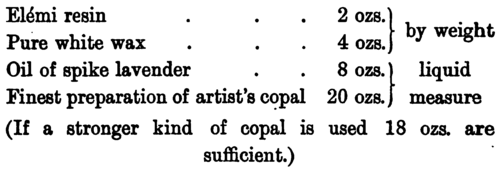
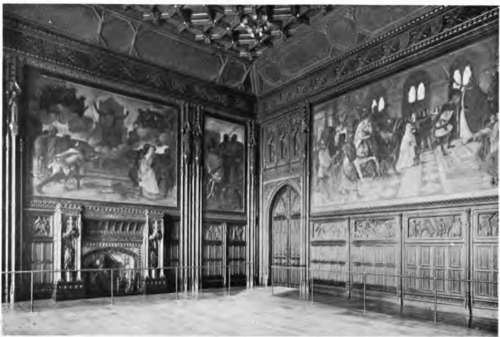

Spieit Fresco. Gambier Fabry's Process
Description
This section is from the book "Mural Painting", by F. Hamilton Jackson. Also available from Amazon: Mural Painting: -1904.
Spieit Fresco. Gambier Fabry's Process
The process invented by Mr. Gambier Parry, and used by him in his paintings in S. Andrew's chapel, Gloucester cathedral, and in Highnam church, was thought so well of by the late Lord Leighton, after using it in Lyndhurst church, that he chose to execute his two great frescoes in the Victoria and Albert Museum in this medium (which, however, show some signs of perishing), and as long ago as 1864 spoke of it in high terms, saying that it was so like buon fresco in its effect as to deceive anyone not conversant with the practice of painting; that it allowed a great range of colour, embracing the whole palette of the oil painter, being free from the limitations which are peculiar to fresco in that particular, as well as in other directions. The manipulation he found very easy, washes, impasto, and glazing being all possible within the space of a few hours, while there was little or no change in the effect after drying, " not more than in a water-colour drawing on absorbent sketching paper." Another point in its favour was the facility of retouching, as the surface is always soluble in spirit, though proof against water. He said that the only point in which he thought it inferior to true fresco was in the absence of that pure crystalline quality of light so peculiar to the latter. The Lords of the Committee of Council on Education asked Mr. Gambier Parry to prepare an account of the process for the information of students in schools of Art, and the technical details here given are taken from this authoritative account.
The advantages claimed for it are: durability, power to resist damp and changes of temperature, freedom from all chemical action on the colours, a matt surface, and a luminous effect. The preparation of the wall is a matter of great importance, but Mr. Gambier Parry was content to accept the ordinary plastering of the interior of buildings if carefully executed, and no doubt it was generally better done thirty years ago than it is now. He says that " the one primary necessity is that it should be left with its natural surface, its porous quality being absolutely essential. All smoothing process or ' floating' with plaster of Paris destroys this quality. All cements must be avoided, some of them having too hard and smooth a surface, and others being liable to efflorescence and chemical action." Stucco on a wall of good, dry brick, is best; next coarse and porous bath stone or other porous free stone. Sand papering fills the pores with powder, and is therefore objectionable. Professor Church says emphatically: " Under no circumstances should cements containing plaster of Paris be introduced into the grounds used for spirit fresco." He is more exacting than Mr. Gambier Parry in the matter of grounds, and expects that the wall shall be specially plastered. He recommends syringing with distilled water charged with carbonic acid gas under pressure as hastening the carbonation of the lime, though it delays the drying of the wall.
The medium used by Mr. Gambier Parry is made of the following materials in these proportions:—
The utensils required for the making of the medium (which should be prepared in the open air, as every ingredient is inflammable) are two pots, one large and one small, a long spoon, and a charcoal stove. Two ounces of eldmi resin are melted in two ounces of rectified turpentine in the small pot, and strained through muslin into the larger pot. Mr. Parry says the one which he uses is of copper, six inches across and eighteen inches high, with a flange near the bottom to make it stand securely on the charcoal. Into this four ounces of white wax are put in small pieces. When all is melted the twenty ounces of copal are added and all boiled together to a white foam, stirring well with a spoon which reaches to the bottom. It is to be removed from the fire and then boiled again, after which eight ounces of spike oil are added.
THE PARABLE OF THE TEN VIRGINS.
Spirit fresco at Lyndhurst church. By Lord Leighton, P.R.A.
Mr. Parry decanted his medium into strong, clear, quart glass bottles, so that the condition of the medium was always visible, leaving them uncorked to cool. "When used, the bottles may require shaking, from the weight of the wax they will tend to thicken at the bottom." With this medium all the colours were mixed as powder on a slab and put into tubes. Mr. Parry says he has many in tubes above twenty years old, as fresh as when put in them.
The wall surface requires dry and warm weather for its final preparation. The amount of medium required (which is not stated) must be diluted with once and a half its bulk of good turpentine. Mr. Parry recommends that this should be done over a dull charcoal fire. With this wash the wall is to be well saturated, " the liquid being dashed against it rather than merely washed over it." The process is repeated two days later. A few days are allowed for evaporation, and then the priming is laid on thickly, made of equal quantities of white lead in powder and gilder's whitening, mixed in medium slightly diluted with about a third of turpentine, and applied with a brush. When it is sufficiently evaporated to bear a second coat " add it as thickly as a brush can lay it. In two or three weeks it will be dry and " a perfect surface 99 is the result—"so white that colours upon it have all the internal light of buon fresco and the transparency of pure water colours, and it is so absorbent that their attachment is complete".
The actual painting should be done boldly and simply, using spike oil freely from the dipper. If the surface is worried the resins rise to the surface and perfect deadness is lost. If the surface is quite hard it may be washed over with spike oil to soften it so that the colours may be well incorporated with the ground. Transparent glazes are less likely to dry dead than colours used with white lead.
"The Rationale of the painting is this: that the colours in powder being incorporated with material identical with that which' has already sunk deep into the pores of the wall surface, and has hardened there by the evaporation of the spirit vehicle, may be regarded as belonging to the mass of the wall itself/1 The spike oil is the one common solvent, " the moment the painter's brush touches the surface it opens to receive the colours, and on the rapid evaporation of the spike oil it closes them in, and thus the work is done." Mr. Parry gives a caution against allowing spike oil or turpentine to run down over or be sprinkled upon the work as a shiny spot is thus produced, which is indelible except by solid over-painting. Great cleanliness is necessary, brushes, palette, etc., having to be cleaned with turpentine at the close of the day's work to avoid the unpleasant stickiness otherwise resulting. It is important to make sure of the genuineness of the materials used in compounding the medium.
Professor Church remarks that this medium contains two doubtful ingredients, el&ni resin and wax, and recommends in preference a paraffin-copal medium, which he says is used in much the same way and involves the same chemical and physical changes. It is made thus: "Warm twelve ounces of oil of spike or non-resinifiable oil of turpentine in a glass flask plunged in water heated to the boiling-point, and then pour into it in a slender stream about four ounces by weight of paraffin wax (melting-point 58° to 62° C.) or of ceresin, or of a mixture of these materials. The mixture becomes perfectly clear if it be thoroughly agitated and maintained at a temperature of 80° C. Then twenty measured ounces of 'picture* copal varnish, or sixteen ounces of oil copal varnish, are slowly added, with constant shaking, in the same way.
It is of the highest importance that the copal varnish used should contain a sufficiency of oil. The paraffin-copal medium thus obtained may be diluted with oil of turpentine exactly as recommended by Gambier Parry with his medium and used in the same way and for the same purpose.11 " It is important to remember that the use of abundance of medium is necessary to bind the particles of pigments firmly together".

Continue to: